Теория игр, дамы и господа. Классика ЕГЭ по информатике. Знаменитейшая триада. Дорогие, интересные, сложные, роскошные задания под номерами 19, 20 и 21. Они связаны между собой, поэтому будем рассматривать все 3 в совокупности.
Их можно решать руками, кодом и даже екселем. На мой взгляд, наиболее предпочтительный способ - решение кодом. Однако, чтобы четче понимать как решать кодом (и на случай, если код на экзамене не получится), полезно рассмотреть решение руками.
Также, есть 2 разновидности этого заданий: с одной кучей и 2 кучами. Рассмотрим все.
Пример 1)
Задание 19
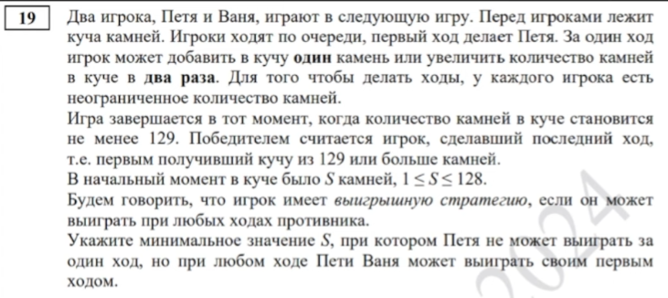
Начнем с конца. Любой игрок, получивший в куче 129 камней или более побеждает, при этом Ваня должен победить первым же ходом. Т.е. независимо от того какой ход сделает Петя Ваня выигрывает первым ходом. Пускай Петя умножил какое-то число на 2. Это число не может быть 65, поскольку тогда Петя выиграл бы первым ходом. Пускай это будет 64. Тогда изначально в куче было 64 камня.
Посмотрим что будет происходить: Петя может либо прибавить 1 камень в кучу либо умножить кол-во камней на 2. В первом случае будет 65, во втором 128. Тогда Ваня действительно выигрывает первым же ходом (65 умножает на 2 или к 128 прибавляет 1 - неважно). Ура, мы нашли такое число.
Минимальное ли оно:? Давайте проверим: возьмем 63. Тогда Петя может сделать либо +1 либо *2. В первом случае Ване достается 64 камня (тогда Петя выигрывает любым ходом ибо вне зависимости от хода Вани Петя может сделать 129 или больше), во втором 126 (также выигрывает Петя умножением на 2). Любой из этих вариантов нас не устраивает ибо выиграть должен Ваня, а не Петя.
Для этого задания также крайне полезна визуализация:
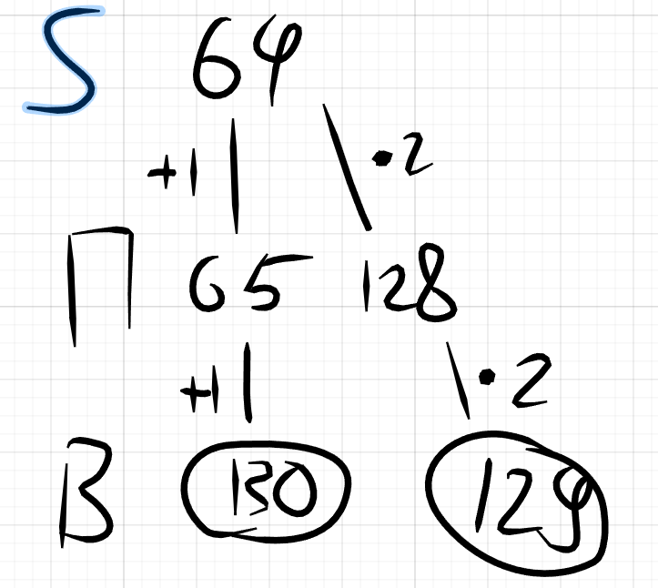
Вывод: да, оно минимальное.
Ответ: 64.
Это задание лишь разминка к остальным заданиям теории игр, однако уже позволяет понять с чем тут работать. К тому же, 20 и 21 задания связаны с 19 в каждом варианте ЕГЭ по информатике. Из этого задания мы можем сделать вывод - любой игрок после хода которого, окажется 64 камня автоматически победил т.е. он будет иметь выигрышную стратегию.
Более того, как показывает практика - подобным образом решаются все задания №19. Т.е. ОБЫЧНО число, которое найдено вот такими незамысловатыми рассуждениями действительно оказывается искомым.
Задание 20
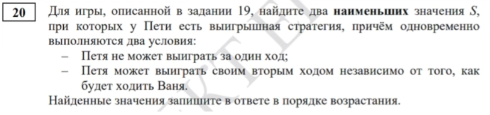
Перефразируя: нужно чтобы Петя выиграл вторым ходом.
Давайте изобразим эту ситуацию:
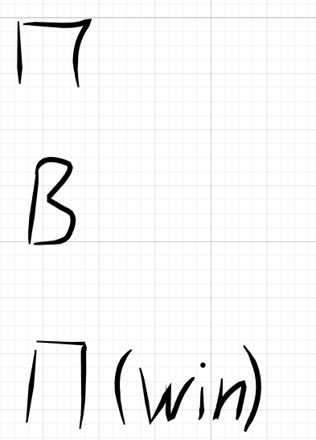
А теперь вспоминаем что мы получили из 19 задания:
Из этого задания мы можем сделать вывод - любой игрок после хода которого, окажется 64 камня автоматически победил т.е. он будет иметь выигрышную стратегию.
Тыдыдыдыыыым,,,
Пускай у Пети осталось 64 камня в конце его хода (тогда он сто проц выиграл).
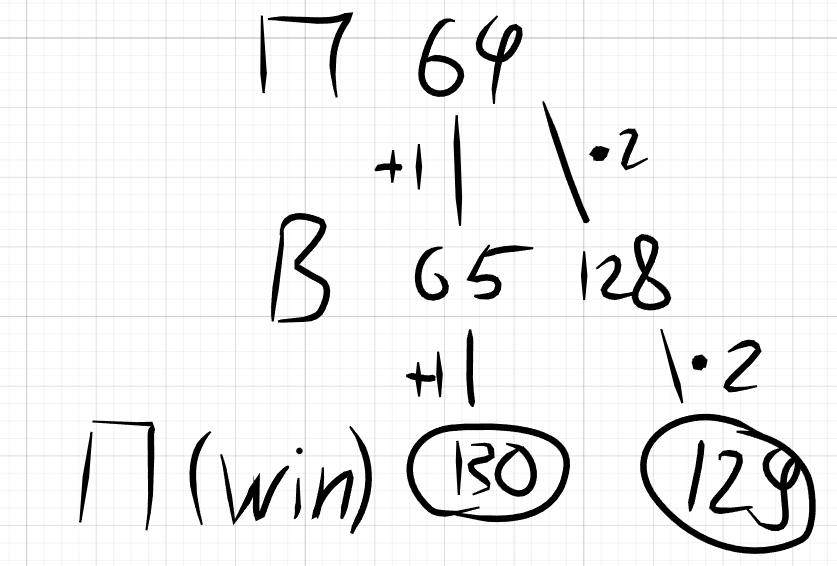
Порассуждаем: как Петя мог получить 64 камня? Очень просто: либо 63 камня либо 32 камня. Ну и собсна говоря все.
Ответ: 32 и 63.
Задание 21
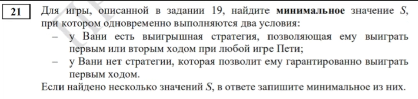
Опять же, вспоминаем 19 задание:
Из этого задания мы можем сделать вывод - любой игрок после хода которого, окажется 64 камня автоматически победил т.е. он будет иметь выигрышную стратегию.
Стало быть, чтобы Ваня затащил вторым ходом (но не затащил первым) надобна, чтобы у него на руках на первом ходу было 64 камня. Т.е. ситуация выглядит как-то так:
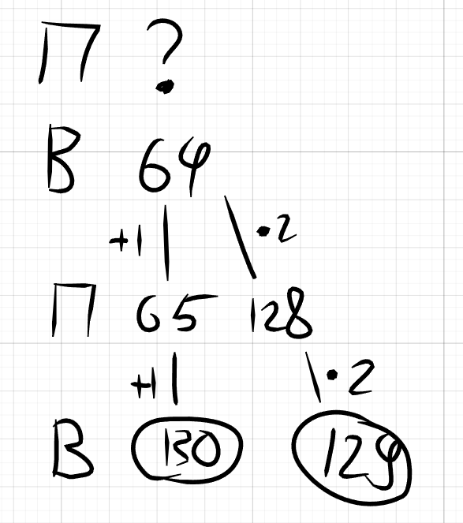
А из задания 20 мы знаем:
как Петя мог получить 64 камня? Очень просто: либо 63 камня либо 32 камня.
А как их получил Петя? 63 можно получить только +1 из 62, а 32 можно получить либо *2 из 16 либо +1 из 31.
Дополним деревце:
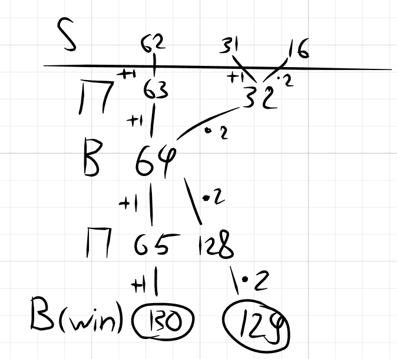
По итогу имеем 3 значения S: 16, 31 и 62. Но не спешите писать в ответ 16, это еще не все. Нам нужно проверить каждый из этих вариантов. Почему? Не факт, что игра будет разворачиваться именно так, как угодно нам, Петя может взять инициативу и перехватить лидерство (он ведь тоже хочет выиграть). Вот пример такой игры с S = 16:
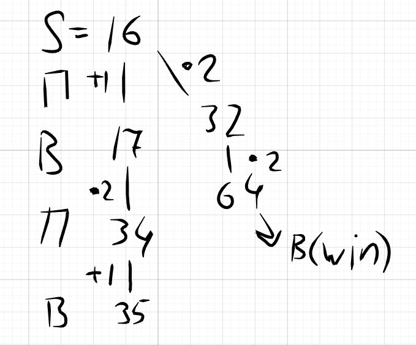
Напомню: нам нужно, чтобы победил именно Ваня первым или вторым ходом. А тут для Вани хуйня буквально везде. Т.к. Петя ходит первым, то он не станет превращать 16 в 32, поскольку тогда Ваня сделает *2, получит 64 и победит, а Петя этого не хочет. Т.е. он сделает из 16 17. Ваня может делать че хочет, в целом, хоть умножать, хоть прибавлять, энивей за 2 хода он не выиграет.
Окей, рассмотрим S = 31:
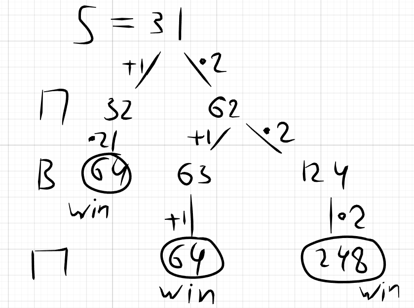
Тут ваще пиздец, Ваня офает с позором. Как видно из дерева, никаким образом Ваня не выиграет (естественно, что Петя не будет из 31 делать 32).
В целом, 62 можно не рассматривать, он точно нам подходит по остаточному принципу, однако для галочки рассмотрим и его:
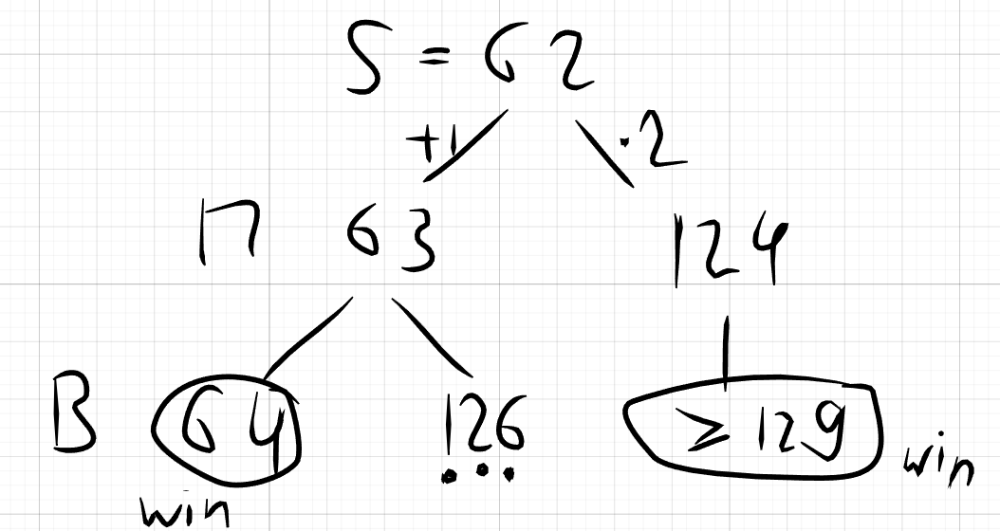
Ответ: 62.
Пример 2)
Задание 19
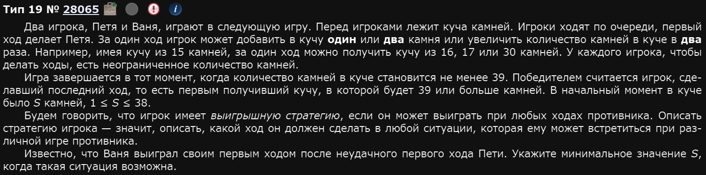
Покажу другой метод решения. Он удобен для решения руками, когда речь идет о неудачном первом ходе Петроида.
Пускай у нас изначально было S камней в куче.
Распишем все возможные сценарии:
Решая эти неравенства найдем все возможные значения S:
Нам нужно минимальное, поэтому берем 10.
Ответ: 10.
Задание 20
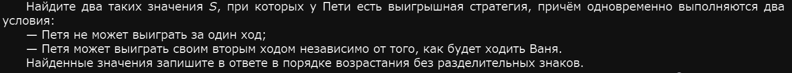
Ну т.е. Петя ходит, Ваня ходит, а потом Петя win.
Давайте подумаем как могло получится 39? В частности 38 (т.е. win) мог получится умножением на 2: , Давайте посмотрим:
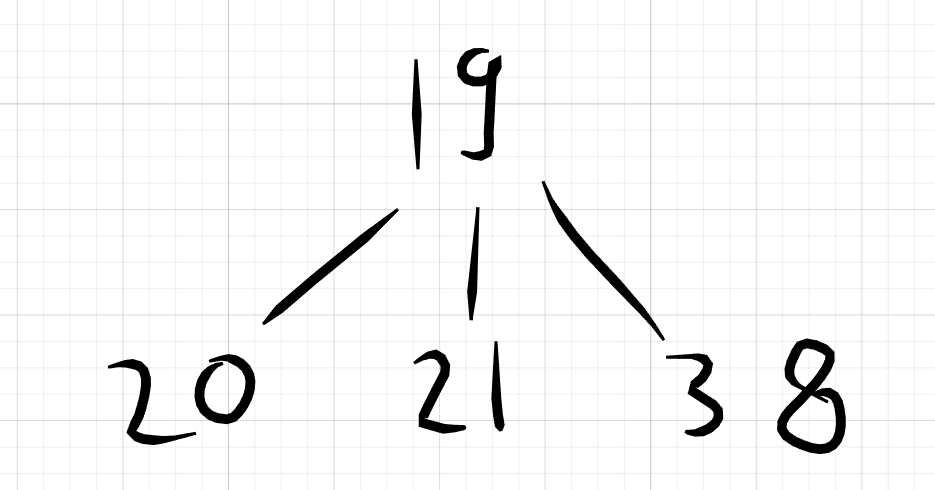
Т.е. следующий игрок просто умножит любое из этих чисел на 2 и выиграет. Игрок, который получил на руки 19 от другого сто проц проиграет.
А значит, получить 19 своим ходом - выигрышная стратегия.
Как могло получится 19? Из 18 или 17.
Т.е. по итогу, ответ: 17 и 18.
Для 21 задания фиксируем: если игрок походит так, чтобы получить 17 или 18 - он проебал.
Для наглядности также нарисуем деревья:
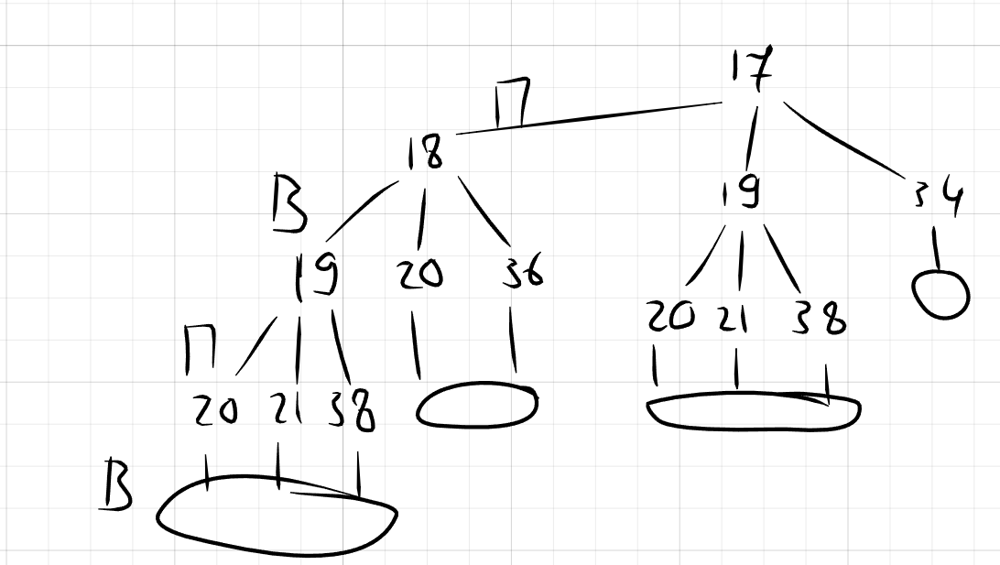
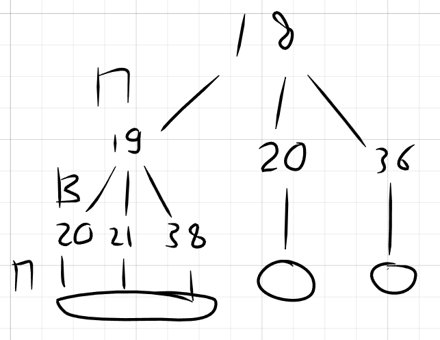
Задание 21
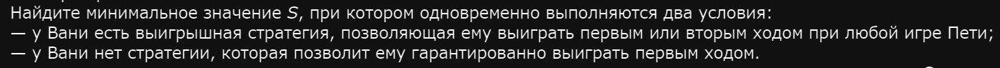
Ну т.е. ходит П, потом В, потом П, потом В win.
Для 21 задания фиксируем: если игрок походит так, чтобы получить 17 или 18 - он проебал.
Заметьте, число возможных ходов увеличилось на 1. Т.е. В 20 задаче было 3 возможных хода, тут 4. Т.е., чтобы выиграть, Ваня должен каким-либо образом привести Петю к позиции 17 или 18 (т.е. у них как будто роли инвертируются, они меняются местами). Тогда Петя проиграет.
Как это сделать, если первым ходит Петя? С нашей помощью конечно. Т.е. первым ходом Петя (при любом раскладе должен получить либо 17 либо 18). Тогда гг. Как можно получить 17 или 18? Из 15, 16, 9 и 17 (15 и 16 в 17, а 9 и 17 в 18). Собсна теперь надобна проверить каждую из этих позиций.
Ловите приколюху: позиции с низким значением надобна проверять в последнюю очередь. Почему? Потому, что Петя (зная, что Ваня хочет затащить вторым ходом) может оттягивать игру до 3+ хода, а нам этого не надо. Также, любые позиции с значением большим, чем подходящее не будут подходить (ведь по условию этого задания всегда надо найти минимальное).
Поэтому начнем проверять с 15:
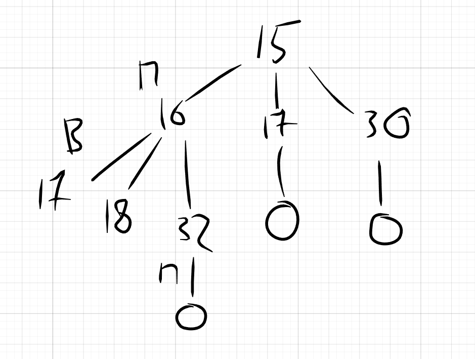
Хуета для Вани. Ладно, бывает. Давайте проверим 16:
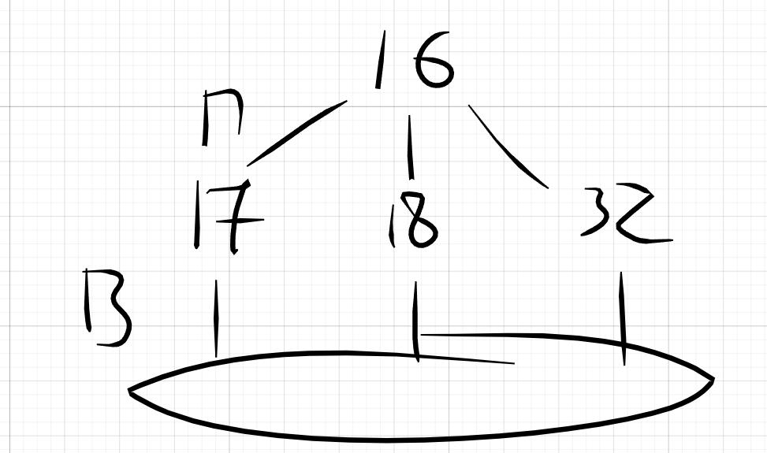
Красота для Вани.
Ответ: 16.
Пример 3)
Задание 19
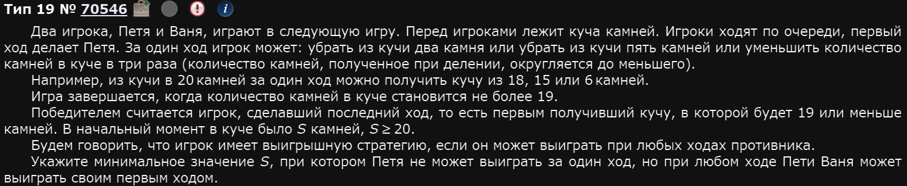
Каким образом можно получить 19? Делением на 3 из 57, вычитанием 5 из 24 или вычитанием 2 из 21. Нужно, чтобы выиграл Ваня. Т.е. Петя ходит как угодно, а потом выигрывает Ваня. При варианте 24 и 21 Петя выигрывает сразу же. Причем 57 также не подходит, поскольку Петя сделает 57 / 3 = 19. Т.е. нужно искать большее число. Округление при делении происходит в меньшую сторону => Нужно выбрать такое число, которое при делении на 3 даст ну как минимум 20, а это 60.
Краткий вывод: любой, кто получит 60 после своего хода - выиграет.
Ответ: 60.
Задание 20
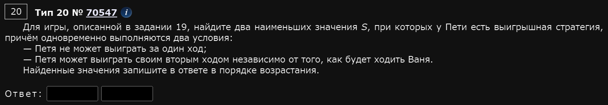
Т.е. ходит Петя, ходит Ваня, а потом Петя win.
Из задания 19 мы выяснили следующее:
Краткий вывод: любой, кто получит 60 после своего хода - выиграет.
Как Пете получить 60? Из 62, 65 или 180. 180 надо рассматривать в последнюю очередь по критерию минимальности. 62 подходит, т.к. первым ходит именно Петя, а значит он сделает из 62 60 и лярд проц затащит. 65 тоже подходит по той же причине, но минимальное ли оно после 62? Неа,,,
Давайте посмотрим на 63 и 64.
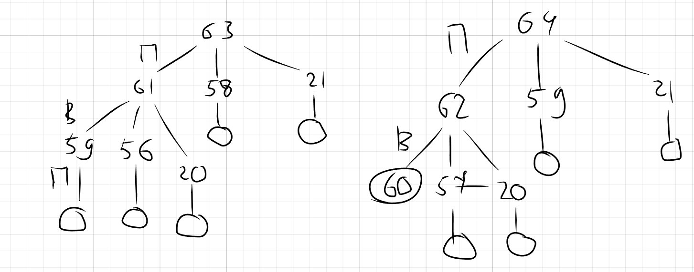
Почему в этой задаче произошло именно так? Если кратко, просто карта так легла, условие так устроено. Т.е. если поделить 60 / 3 получим 20, базара нет. Но также можно получить, например 21 путем 63 / 3, получить 21 и также выиграть некст ходом (поскольку минимально мы вычитаем именно 2).
Мораль: всегда думайте и анализируйте че вы делаете и зачем, желательно еще и наперед.
Заодно, получили ответ на 21 номер.
Ответ: 62 и 63.
Задание 21
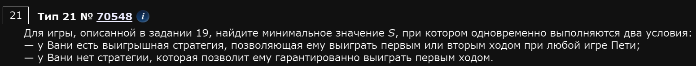
Наработав некоторый опыт в решении 19, 20 и 21 номеров вы могли заметить один любопытный факт: крайне часто ответом на 21 номер является такое число S, из которого можно получить ответ на номер 20. Почему так? Потому, что в 21 номере просят, чтобы выиграл игрок противоположный 20ому номеру.
Конкретно здесь, вспомнив 20ый номер:
Вывод для 21 номера: любой, кто получит после своего хода позицию 62 или 63 - проебал.
Т.е. Ваня не должен получить после своего хода 62 или 63, такие цифры должен получить Петя. Конкретно в этом задании, мы уже подумали сильно наперед и можем сразу давать ответ 64. Проверим:
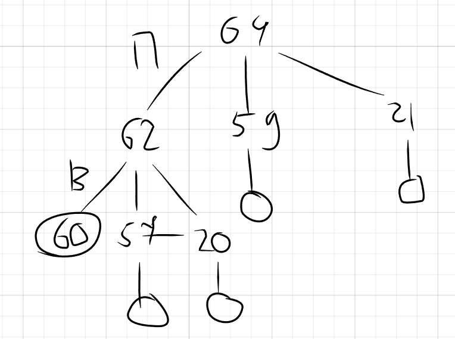
Ответ: 64.
Решение кодом
А теперь мы разберем все те же задачи, но кодом. Начнем с Пример 1)
Код шаблонный, хоть и может быть сложным для понимания. Если мои потуги объяснить как он работает окажутся бесполезными, то имеет смысл просто выучить его. Меняться в зависимости от задачи он будет всего в нескольких местах (покажу в каких и когда).
def f(s, m): # Рекурсивная функция
if s >= 129:
return m % 2 == 0
if m == 0:
return 0
h = [f(s + 1, m - 1), f(s * 2, m - 1)]
return any(h) if m % 2 != 0 else all(h)
print('19', [s for s in range(1, 128) if f(s, 2)]) # 19ое задание
print('20', [s for s in range(1, 128) if not f(s, 1) and f(s, 3)])
# 20ое задание
print('21', [s for s in range(1, 128) if not f(s, 2) and f(s, 4)])
# 21ое заданиеОсновная идея: мы хотим определить, может ли игрок выиграть, если игра будет идти по идеальной стратегии. Для этого используем рекурсивную функцию, которая просчитывает все возможные ходы наперед.
Введем две ключевые переменные:
s— текущее количество камней в куче.m— количество оставшихся ходов до конца игры.
Разберемся с m подробнее.
- Если Петя выигрывает своим первым ходом, значит он делает единственный ход в игре, поэтому
m == 1. - Если Ваня выигрывает первым ходом, это второй ход в игре, поэтому
m == 2. - Если Петя не может выиграть первым ходом, но выигрывает вторым, значит:
m != 1(он не победил сразу).m == 3(он выигрывает на третьем ходу игры).
- Если Ваня выигрывает своим первым или вторым ходом, но не может выиграть первым, значит:
m != 2(он не победил сразу).m == 4(он выигрывает вторым своим ходом, который в игре является четвертым).
Это важно, потому что ход Вани всегда четный, а ход Пети всегда нечетный.
Когда игра заканчивается?
Теперь рассмотрим базовые случаи — ситуации, когда наша рекурсивная функция должна вернуть True (выигрыш) или False (проигрыш).
Игрок выиграл
if s >= x:
return m % 2 == 0x— минимальное количество камней для победы (129в задаче).- Если игрок дошел до
s >= 129, он выиграл, но победителем считается тот, кто сделал последний ход. Поэтому функция возвращаетTrue(1), еслиm % 2 == 0(четный ход, значит, последний ход сделал Ваня).
Игра не успела закончиться (m = 0) → проигрыш
if m == 0:
return False # Не успел выиграть- Если
m == 0, значит, ходов больше нет, а победа так и не наступила. - В этом случае игрок проиграл.
Как обрабатываем возможные ходы?
Теперь, если игра не завершилась, мы должны просмотреть все возможные ходы.
h = [f(s + 1, m - 1), f(s * 2, m - 1)]- Мы создаем список
h, где храним результаты ходов:s + 1(добавить 1 камень).s * 2(умножить на 2).
- Каждый из них вызывает ту же самую функцию
f(), но сm - 1(на один ход меньше).
После выполнения всех возможных ходов, переменная h содержит список из 0 и 1 (False и True):
h = [0, 1, 1] # Например, один ход проигрышный, два выигрышныхКак определить стратегию?
Здесь ключевой момент — выбор игрока зависит от четности m.
return any(h) if m % 2 != 0 else all(h)Когда m нечетное (Петя делает ход):
- Петя — активный игрок (он задает темп игры).
- Ему нужно хотя бы одно выигрышное развитие событий, чтобы победить.
- Поэтому используем
any(h): - Если есть хотя бы один выигрышный ход, Петя всегда его выберет.
Когда m четное (ходит Ваня):
- Ваня реагирует на ход Пети.
- Он победит только если у него все ходы выигрышные.
- Поэтому используем
all(h): - Если хоть один ход проигрышный, Ваня не может гарантированно выиграть.
- Он выиграет только если все элементы в
h—True.
Таким образом, код строит дерево возможных ходов и рекурсивно проверяет, может ли текущий игрок гарантированно победить. Мы используем четность m, чтобы определить, кто ходит и какая стратегия работает.
any(h) if m % 2 != 0 else all(h) моделирует поведение игроков:
- Петя может выбрать лучший ход (
any()). - Ваня вынужден учитывать все варианты (
all()).
По итогу, мы получаем сразу 3 ответа на 3 задания:
19 [64]
20 [32, 63]
21 [62]
Давайте попробуем сделать остальные задания. Заодно поговорим о местах где код может меняться.
Основные моменты, где и когда меняется код:
Касаемо рекурсивной функции:
- Если одна куча камней - у нас в рекурсивной функции два аргумента:
sиm. В случае, если две кучи камней, тогда три аргументаa,b,m. - Строчка
if s >= xилиif s <= xменяется в зависимости от условия. Если действия, которые можно делать с кучей / кучами камней прибавляют или умножают, то тогда пишитеif s >= x. Иначе -if s <= x.xтакже меняется в зависимости от задачи. - Строка
return m % 2 == 0не меняется никогда. - Строка
if m == 0: return 0не меняется никогда. hменяется в зависимости от действий, которые можно делать с камнями, а также в зависимости от того сколько куч камней. Ниже описаны примеры.
- Если к одной куче можно прибавлять 1 или умножать на 2, тогда
h = [f(s + 1, m - 1), f(s * 2, m - 1)]. - Если к этой же куче можно прибавлять 1, умножать на 2 или умножать на 4, тогда так:
h = [f(s + 1, m - 1), f(s * 2, m - 1), f(s * 4, m - 1)]. - Если с камнями в куче можно делать -4 и делить на 2, тогда так:
h = [f(s - 4, m - 1), f(s // 2, m - 1)]. - Если в условии задания 2 кучи камней, тогда к каждой из куч
aиbмы делаем те же действия, что и для одной. Т.е. если к одной из куч можно прибавлять 1 или умножать на 2, тогда:h = [f(a + 1, b, m - 1), f(a * 2, b, m - 1), f(a, b + 1, m - 1), f(a, b * 2, m - 1)].
- Строка
return any(h) if m % 2 != 0 else all(h)меняется только тогда, когда, по условию, Петя сделал неудачный первый ход. В таком случаеelse all(h)меняется наelse any(h). В этом случае код выведет все подходящиеs. Нам нужно будет глазами найти минимальное. Важно: эту подобным образом меняем только тогда, когда нужно ответить на 19ое задание. Для 20ого и 21ого задания она выглядит стандартным образом и выдает правильные ответы.
Касаемо второй части программы, т.е. поиска s:
- Сами
print('19',),print('20',)иprint('21',)не меняются никогда. - Сами циклы
s for s in range(1, x - 1)не меняются никогда. Меняется толькоx. - Условия после циклов по типу
f(s,2)меняются в зависимости от задачи. См. Публичный сайт/Предметы/Инфушечка/Разбор задач/№19, 20, 21 Теория игр > ^b26c83. Стоит отметить, что вопросы заданий 20 и 21 не меняются почти никогда. Значит, их условия почти никогда не редактируются.
Таким образом, мы можем переписать код для Пример 2):
def f(s, m):
if s >= 39:
return m % 2 == 0
if m == 0:
return 0
h = [f(s + 1, m - 1), f(s + 2, m - 1), f(s * 2, m - 1)]
return any(h) if m % 2 != 0 else all(h) # ввести any(h) для 19ого
print('19', [s for s in range(1, 38) if f(s, 2)])
print('20', [s for s in range(1, 38) if not f(s, 1) and f(s, 3)])
print('21', [s for s in range(1, 38) if not f(s, 2) and f(s, 4)])Ответы:
19 [10]
20 [17, 18]
21 [16]
Рассмотрим Пример 3)
def f(s, m):
if s <= 19:
return m % 2 == 0
if m == 0:
return 0
h = [f(s - 2, m - 1), f(s - 5, m - 1), f(s // 3, m - 1)]
return any(h) if m % 2 != 0 else all(h)
print('19', [s for s in range(20, 300) if f(s, 2)])
# до 300 выбрано по приколу
print('20', [s for s in range(20, 300) if not f(s, 1) and f(s, 3)])
print('21', [s for s in range(20, 300) if not f(s, 2) and f(s, 4)])У этого кода вывод будет такой:
19 [60, 61]
20 [62, 63, 65, 66, 180, 181, 182, 183, 184, 185]
21 [64, 67, 68, 186, 187]
В разборе этого примера руками мы уже сталкивались с некоторыми особенностями рассуждений. Именно за этим и был нужен разбор конкретно этого примера руками. Чтобы вы понимали как интерпретировать вывод кода. В данном случае, из-за особенностей задания, ответы будут такие:
19 [60]
20 [62, 63]
21 [64]
Пример 4)
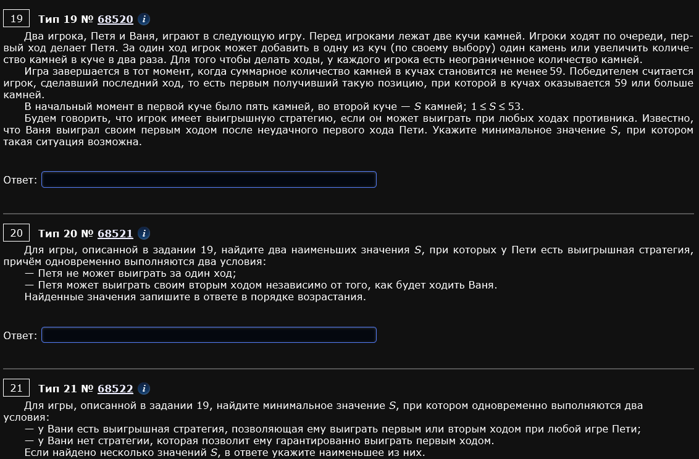
Подобные задачи с двумя кучами решать руками сложнее. Именно за этим и нужен код. Чтобы стабильно и без потери времени решать даже такие задания.
def f(a, b, m):
if a + b >= 59:
return m % 2 == 0
if m == 0:
return 0
h = [f(a + 1, b, m - 1), f(a * 2, b, m - 1), f(a, b + 1, m - 1), f(a, b * 2, m - 1)]
return any(h) if m % 2 != 0 else all(h)
print('19', [s for s in range(1, 54) if f(5, s, 2)])
print('20', [s for s in range(1, 54) if not f(5, s, 1) and f(5, s, 3)])
print('21', [s for s in range(1, 54) if not f(5, s, 2) and f(5, s, 4)])Обратите внимание как написаны условия if f(5, s, 2) и другие. Такое написание связано с тем, что изначально известно, что в первой куче 5 камней, а во второй s. Вот прям так и пишем.
К тому же, по условию, Петя балбес и первый ход делает неудачно. Значит, для 19ого задания надо поменять строку return any(h) if m % 2 != 0 else all(h) на строку return any(h) if m % 2 != 0 else any(h).
Выводы программы (ответы):
19 [14, 15, 16, 17, 18, 19, 20, 21, 22, 23, 24, 25, 26, 27, 28, 29, 30, 31, 32, 33, 34, 35, 36, 37, 38, 39, 40, 41, 42, 43, 44, 45, 46, 47, 48, 49, 50, 51, 52]
20 [24, 26]
21 [23, 25]